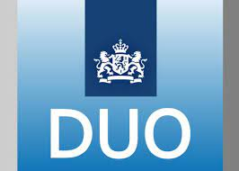

<!DOCTYPE html>
<html lang="en"></html>
   <head>
      <title>ouderavond</title>
      <link rel="stylesheet" href="style.css">
      <link rel="stylesheet" href="https://cdnjs.cloudflare.com/ajax/libs/font-awesome/5.15.3/css/all.min.css"/>
   </head>
   <body>
      <nav>
        <div class="logo"> 
            Bsa
         </div>
         <input type="checkbox" id="click">
         <label for="click" class="menu-btn">
         <i class="fas fa-bars"></i>
         </label>
         <ul>
            <li><a href="index.html">Home</a></li>
            <li><a href="Over Danyel.html">Over Danyel</a></li>
            <li><a class="active" href="bsa.html">Bsa</a></li>
            <li><a href="software.html">Software</a></li>
            <li><a href="locatiegids.html">Locatie Gids</a></li>
            <li><a href="examenplan.html">Examenplan</a></li>
            <li><a href="opleiding.html">Opleiding</a></li>
            <li><a href="Over Amine.html">Over Amine</a></li>
            <li><a href="canvas.html">Canvas</a></li>
         </ul>
      </nav>
      <h2 class="informatie">Bindend Studie Advies (BSA):</h2>

         <p>In juni ontvangen we een bindend studievoorstel. Dit kan positief of negatief zijn, afhankelijk van onze voortgang met ons verbeterplan.
         
         Als je voldoet aan de voorwaarden die voor je opleiding gelden, ontvang je een positief studieadvies.
         
         Als je niet in aanmerking komt, kun je een negatief studieadvies krijgen. In dit geval kunt u de training niet voortzetten. Je krijgt hulp bij het vinden van nieuw onderwijs.
         
         Nadere informatie over het bindend studieadvies kun je krijgen bij de studentendecaan en het Studentenstatuut.
         Voorwaarde voor het behalen van een positief BSA is dat alle vakken in elke fase met een V of G moeten zijn afgerond. Als je een O krijgt in twee vakken, moet je inhalen en aanpassen naar minimaal een V in de volgende fase.</p>
         <h2>Voortijdige beëindiging onderwijsovereenkomst:</h2>

         <p>Er zijn omstandigheden waardoor de onderwijsovereenkomst, zowel in het eerste als in latere leerjaren, voortijdig kan worden beëindigd. Dit kan alleen in de volgende gevallen:

            Je ondervindt teveel last van lichamelijke dan wel psychische klachten waardoor je het beroep waarvoor je wordt opgeleid niet kunt uitoefenen.
            Je laat onvoldoende voortgang zien in jouw studie.
            Je laat onvoldoende ontwikkeling zien in jouw beroepshouding.
            Je bent onvoldoende aanwezig om de studie te behalen.
            Je laat gedrag zien dat niet past bij de studie of toekomstig beroep.</p>
            <h2>De procedure voor het beëindigen van de onderwijsovereenkomst is als volgt:</h2>
            <p>Gedurende het schooljaar heb je minimaal twee voortgangsgesprekken. Als je leervoortgang één of meerdere punten achterloopt, ontvang je een verbeterplan. Een verbeterplan beschrijft welke verbeteringen je wanneer moet aantonen.</p>
            <p>Binnen drie maanden na de startdatum van het verbeterplan vinden onderzoeksvoortgangsgesprekken plaats. Dan kijken de docenten of je voldoende verbetering laat zien. Een advies om je opleiding te beëindigen kan worden gedaan als de verwachting is dat je je diploma niet binnen de gestelde termijn kunt halen. Je opleidingsovereenkomst eindigt dan voortijdig en je opleiding stopt.</p>
            <p>Je ontvangt een schriftelijke bevestiging van de beëindiging van je onderwijsovereenkomst. Hierin staat waarom het Techniek College Rotterdam heeft besloten je onderwijsovereenkomst voortijdig te beëindigen. Het Techniek College Rotterdam zal jou helpen om te zoeken naar een passende opleiding.
               Wanneer je het niet eens bent met het beëindigen van je onderwijsovereenkomst kan je binnen 10 werkdagen een herziening aanvragen bij het college van bestuur van de instelling waar je bent ingeschreven (Albeda of Zadkine). </p>
            
         
   </body>
</html>